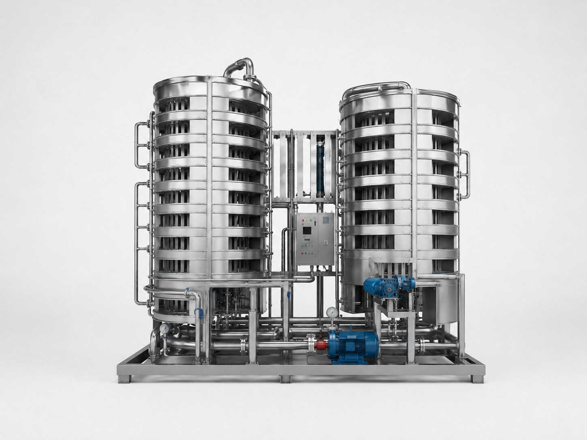

پاستورایزر اسپیرال چگونه کار میکند؟
تونل پاستوریزه اسپیرال برای پاستوریزهکردن بطریهای سرد یا گرمشده طراحی میشود. ساختار اسپیرال امکان افزایش زمان ماند محصول را در سطح اشغال کمتر فراهم میکند و برای هماهنگی با ظرفیت خط قابل طراحی است.
کاربرد در خط تولید
پاستوریزاسیون انواع نوشیدنی، سس، کشک، دوغ و محصولات بستهبندیشده در شیشه یا ظروف مقاوم به حرارت.
مشخصات قابل سفارش
| جنس | Stainless Steel 304L |
|---|---|
| ظرفیت | ۲٬۰۰۰ تا ۲۰٬۰۰۰ لیتر در ساعت |
| ساختار | اسپیرال کمجا |
مزیتهای این راهکار
- بازیافت انرژی
- مصرف کمتر بخار، آب و برق
- اشغال فضای کمتر
- امکان تنظیم زمان ماند
- طراحی متناسب با ظرفیت خط
انتخاب تجهیز مناسب از کجا شروع میشود؟
انتخاب نهایی باید براساس نوع محصول یا سیال، ظرفیت واقعی خط، شرایط نصب، سطح اتوماسیون و تجهیزات بالادست و پاییندست انجام شود. برای جلوگیری از ایجاد گلوگاه، مشخصات این دستگاه باید در کنار کل فرایند بررسی شود.
پرسشهای متداول
مزیت ساختار اسپیرال چیست؟
افزایش زمان ماند محصول در فضای کمتر و استفاده بهینهتر از سطح سالن.
این دستگاه برای چه محصولاتی کاربرد دارد؟
برای نوشیدنی، سس، کشک، دوغ و محصولات بستهبندیشده در ظروف مقاوم به حرارت.
ظرفیت قابل طراحی چقدر است؟
بازه ثبتشده ۲٬۰۰۰ تا ۲۰٬۰۰۰ لیتر در ساعت است و انتخاب نهایی به خط وابسته است.
راهکارهای مرتبط
تجهیزات خط تولید نوشیدنی · سیستم CIP · طراحی تجهیزات خط تولید نوشیدنی